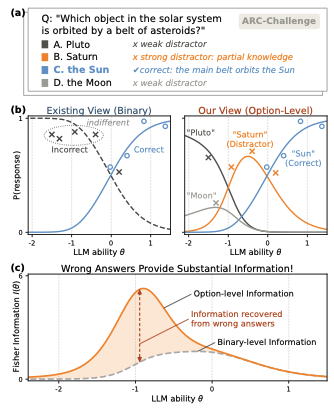
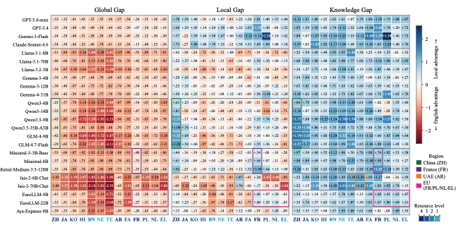
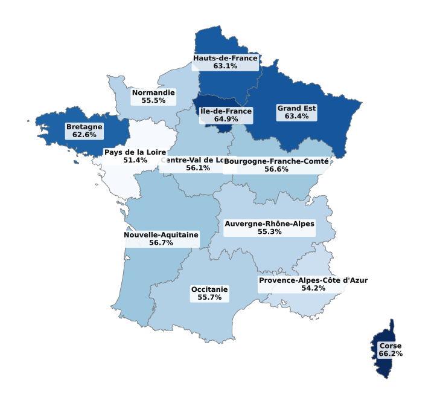
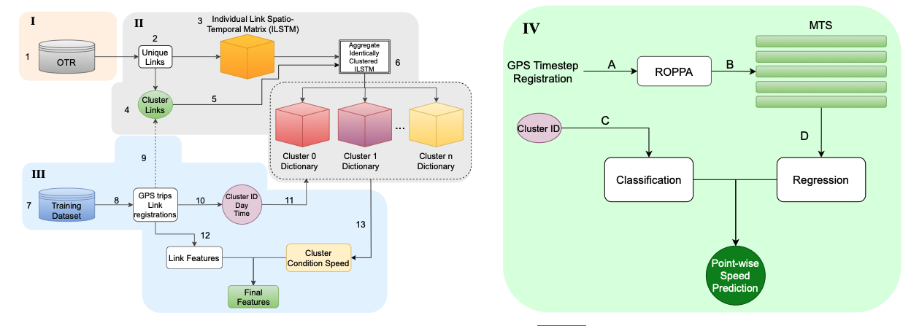
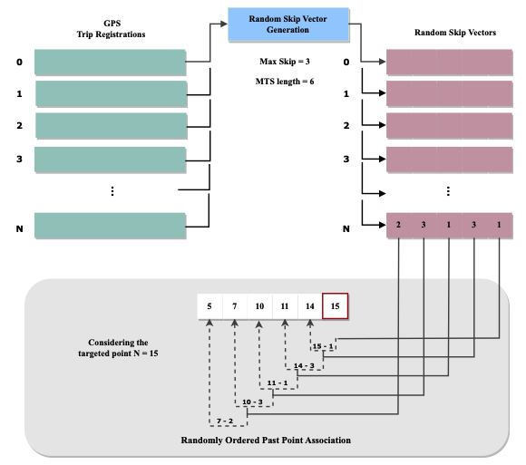

2026

Every Wrong Answer Counts: Option-Level Psychometrics for LLM Multiple-Choice Benchmarks
Introduces LLM-NRM, an option-aware psychometric framework that models the full distribution over answer choices to jointly estimate LLM ability and option-level item characteristics.

The Masked Advantage: Uncovering Local-Language Access to Cultural Knowledge in LLMs
A controlled framework built on real-world cultural questions to study whether local cultural knowledge in LLMs is better accessed through English or through the local language.

CARTE: A Benchmark for Mapping Language Model Knowledge Across France
A multiple-choice benchmark of 2,431 questions spanning the 13 metropolitan regions of France and 14 thematic domains, evaluating LLMs on fine-grained, regionally differentiated knowledge.

PPI2Text: Captioning Protein-Protein Interactions with Coordinate-Aligned Pair-Map Decoding
A multimodal LLM for free-form captioning of protein-protein interactions directly from amino acid sequences, using coordinate-aligned pair-map decoding.
2025

Prot2Text-V2: Protein Function Prediction with Multimodal Contrastive Alignment
A multimodal sequence-to-text model that generates free-form descriptions of protein function from amino acid sequences, combining an ESM-3B protein encoder with a LLaMA-3.1-8B decoder through contrastive alignment.
2024

Clustering Dynamics for Improved Speed Prediction Deriving from Topographical GPS Registrations
Speed prediction from sparse GPS data and topographical / road-design features, aiming to predict traffic speed in regions with little or no transportation data.

2023

SWMLP: Shared Weight Multilayer Perceptron for Car Trajectory Speed Prediction using Road Topographical Features
A speed prediction method independent of large historical speed data, fitting a Shared Weight Multilayer Perceptron on the road topographical features of a vehicle's trajectory.
2021
2020
2019

Fight detection in video sequences based on multi-stream convolutional neural networks
A multi-stream CNN approach for automatic detection of fight events in video sequences, combining spatial and temporal information streams.